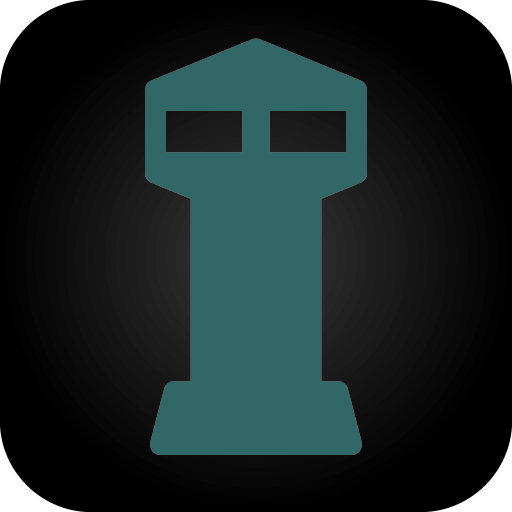

Vedette
1.1.12-2 · iOS 15 及以上按应用与守护进程独立管理 CPU 限制和 nice 调度优先级，保留原生设置界面。
Per-app and per-daemon CPU limits with independent nice scheduling priority controls.
两种控制，各自独立
- CPU：按目标配置 CPU 限额与超限处理方式，支持限速或终止。
- nice：独立开关与 −20～20 数值选择。数值越小，调度优先级越高；默认不干预，可以只调 nice 而不启用 CPU 限制。
- 恢复：首次记录 nice 原值，关闭或删除规则时尝试恢复；失败保留记录，外部修改冲突不强行覆盖。
- 反馈：显示最近执行回执，支持手动检查／重试。配置已启用不等于实时内核状态。
本次更新
- 正式版 1.1.12-2，版本顺序高于此前的 nice 测试版与初次正式构建。
- 放开守护进程列表的 SpringBoard 入口，只匹配系统完整路径；同名程序不会套用该规则。默认关闭，关键进程确认保留。
- 同时提供 rootless 与 roothide 两种安装包，不可混装。
- 保留 nice2 的工具签名权限修复、CPU／nice 执行逻辑及界面。
- 更新包描述与本站介绍页，下架源内旧 Vedette 版本。
下载与兼容性
优先在包管理器中刷新本源后安装，由客户端按环境选择对应架构。
依赖 PreferenceLoader、Substrate 兼容注入环境及 AltList；roothide 包另依赖 RootHide。
使用边界
nice 不是 CPU 百分比上限，也不是 Jetsam 保后台设置。过低 CPU 限额或激进优先级可能增加延迟；不承诺耗电或流畅度收益。不要同时使用其他工具反复改写相同目标的 nice。
卸载前会检查 nice 恢复结果。恢复失败可能阻止卸载，应先处理原因，不要直接删除恢复记录。原 CPU 批量恢复的既有边界没有在本次版本中扩大保证。